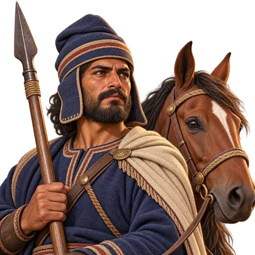
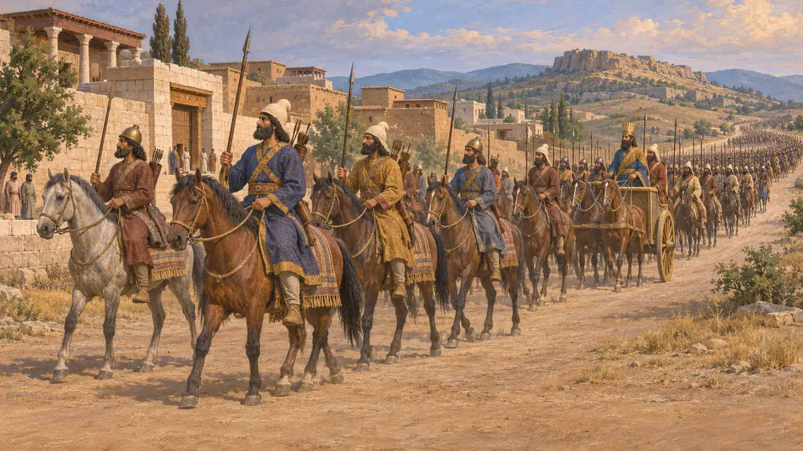
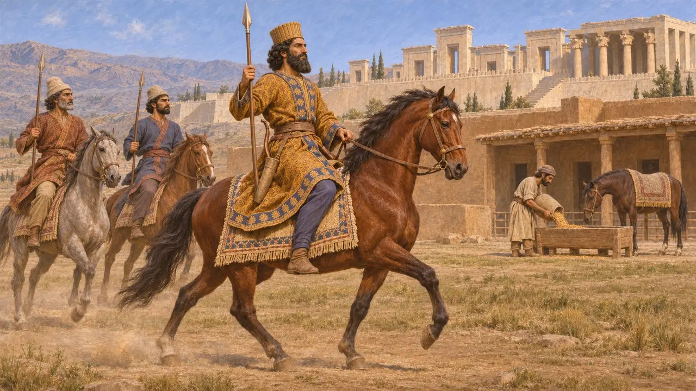
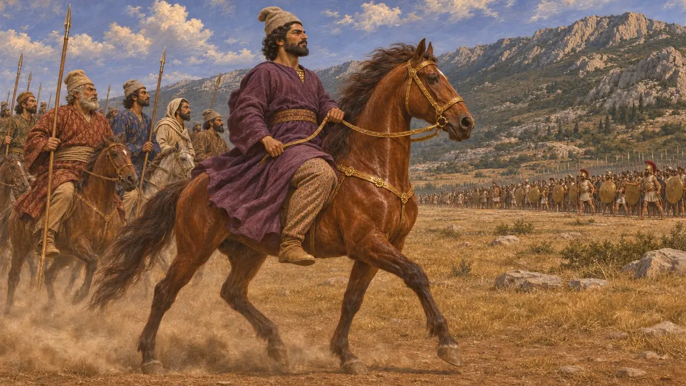
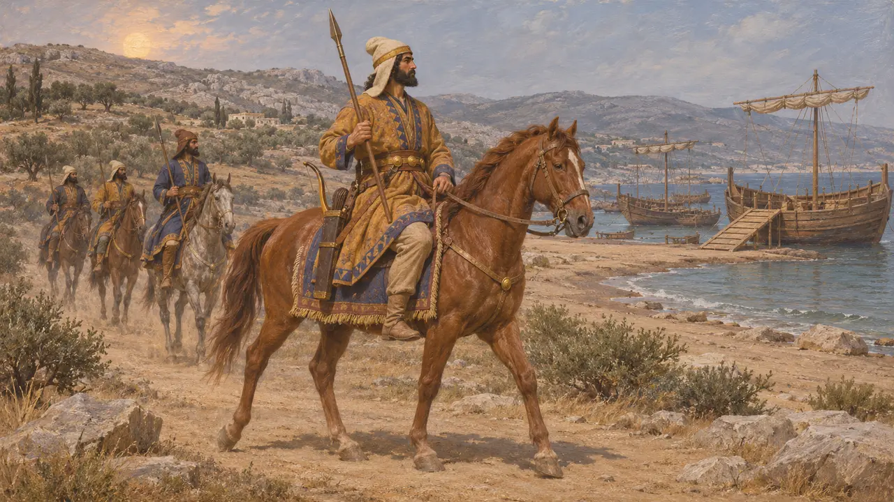
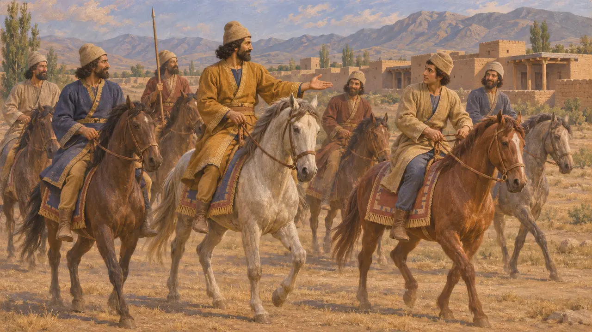

Cavaliere del Re
Cavalleria scelta persiana che cavalcava accanto al Re, 530-479 a.C. circa
I cavalieri del Re erano un corpo scelto di cavalieri persiani che scortava il Re nei cortei e in campagna. Erodoto colloca intorno a Serse, nel 480, due corpi di mille cavalieri persiani scelti. Presso i Persiani cavalcare era segno di rango, e nel racconto erodoteo di Platea la cavalleria fu l'arma persiana che i Greci trovarono più difficile da affrontare.
Nel gioco: Il gioco rappresenta il Cavaliere del Re come un'unità di cavalleria addestrata dell'esercito del Re. I cavalieri reali scelti erano Persiani di rango selezionati per cavalcare accanto al Re, quindi la semplice unità addestrata del gioco è una semplificazione.

Mille cavalieri davanti e dietro al Re
Racconto anticoErodoto racconta che Serse lasciò Sardi nel 480 preceduto da mille cavalieri scelti fra tutti i Persiani. Altri mille cavalieri scelti cavalcavano dietro il suo carro e i suoi lancieri, e altri diecimila cavalieri persiani seguivano i diecimila fanti. Afferma che la cavalleria persiana era armata come la fanteria persiana, benché alcuni portassero elmi di bronzo e ferro battuti.
Herodotus 7.40-41; Herodotus 7.84

Un re che si vantava della sua abilità di cavaliere
Nelle fontiNella sua iscrizione funeraria a Naqsh-e Rostam, Dario afferma di essere un buon cavaliere, e un buon arciere e lanciere sia a piedi sia a cavallo. Il Re presentava l'abilità in sella come una virtù regale. Le tavolette delle Fortificazioni di Persepoli, del 509-493 a.C. circa, ne mostrano il lato pratico: i funzionari distribuivano grano come foraggio per i cavalli mantenuti dall'amministrazione.
DNb; R. T. Hallock, Persepolis Fortification Tablets, 1969

I cavalieri a Platea
Racconto anticoErodoto narra che nel 479 Mardonio lanciò la sua cavalleria contro i Greci ai piedi del Citerone, guidata da Masistio su un cavallo niseo dalla briglia d'oro, con una corazza a scaglie d'oro sotto una tunica di porpora. Il suo cavallo, colpito da una freccia, lo disarcionò e gli Ateniesi lo uccisero. In seguito i cavalieri assalirono i convogli di rifornimento greci nei passi del Citerone e contaminarono la fonte Gargafia, costringendo i Greci a spostare il campo.
Herodotus 9.20-25; Herodotus 9.39; Herodotus 9.49-51

Cavalleria della guardia e cavalieri mancanti
ContesoGli storici discutono su come fosse organizzata la cavalleria del Re e su quanto fosse numerosa. Le cifre di Erodoto per l'esercito di Serse sono in genere ritenute molto esagerate, e non è chiaro se i suoi diecimila cavalieri persiani formassero un corpo permanente. Si discute anche sul perché la cavalleria non abbia alcun ruolo nel suo racconto di Maratona del 490. La Suda, un lessico bizantino del X secolo, afferma che i cavalieri erano assenti, mentre alcuni studiosi moderni pensano che si stessero reimbarcando o fossero fuori portata.
Herodotus 6.102-117; Suda; P. Briant, From Cyrus to Alexander, 2002

Ciro e la nascita della cavalleria persiana
Leggenda posterioreLa Ciropedia di Senofonte afferma che i Persiani non avevano cavalieri propri finché Ciro non convinse i suoi pari a imparare a cavalcare e ne fece un corpo di cavalleria. L'opera è un ritratto idealizzato scritto circa un secolo e mezzo dopo Ciro. Il racconto di un re saggio che inventa la cavalleria persiana va letto più come una lezione morale che come storia.
Xenophon, Cyropaedia 4.3
Fonti
- Herodotus, Histories 6.102-117, 7.40-41, 7.84, 9.20-25, 9.39, 9.49-51
- DNb
- R. T. Hallock, Persepolis Fortification Tablets, 1969
- P. Briant, From Cyrus to Alexander, 2002
- Xenophon, Cyropaedia 4.3
- Suda